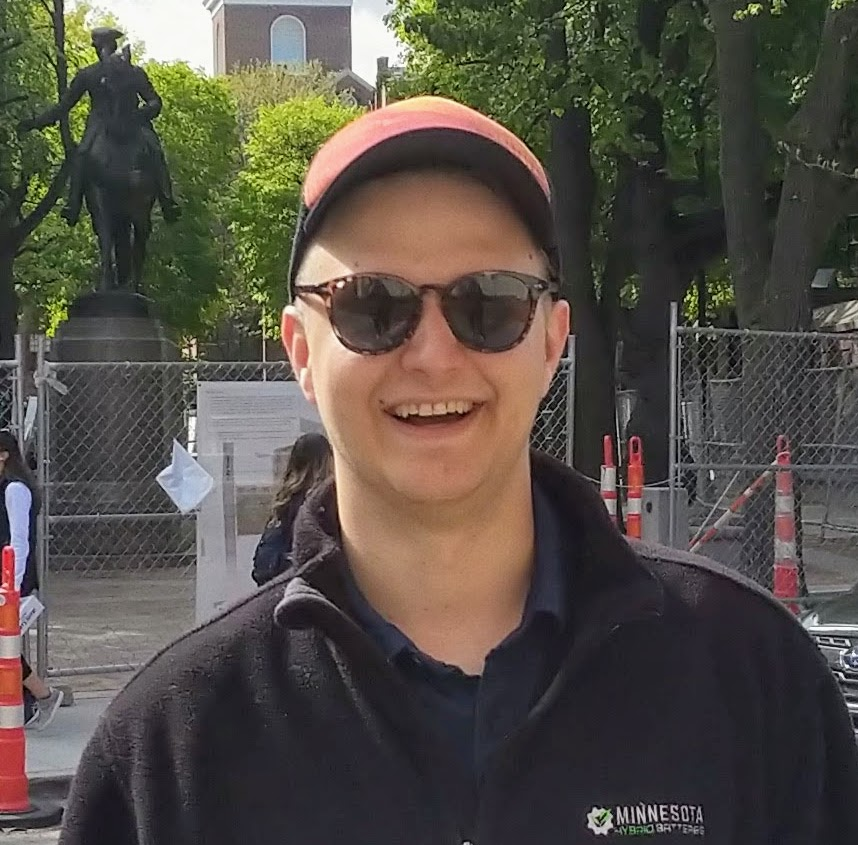

Minneapolis, Minnesota
I am an avid cyclist, tinkerer, hacker, and technologist. Actively have a passion for all things that move. Previously lived as a mechanic, artist, and poet.
I currently work in the R&D department of a company called Protolabs. We call our group Protoworks after the skunkwork aerospace teams at Lockheed and Boeing. My current role is Machinist, but I spend most of my day troubleshooting software bugs in our automated machining software.